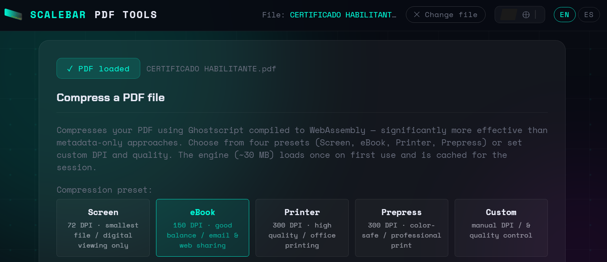
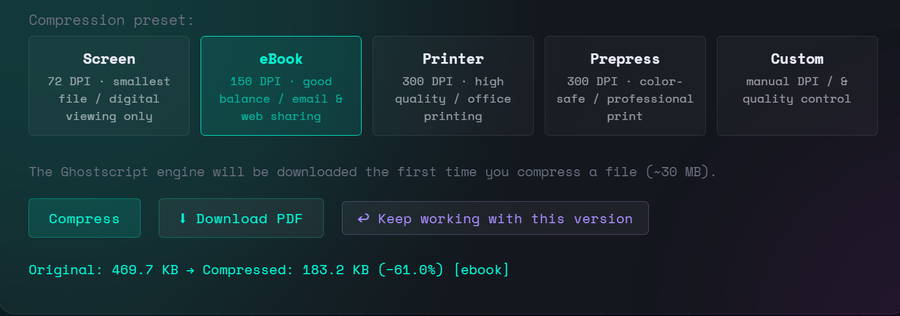

Scanned architectural drawings, multi-page specification documents, site reports with embedded photographs — PDFs in a professional context get large quickly and stay large. Most solutions to this problem are either too aggressive (wrecking print quality), inaccessible (requiring paid software or a server upload), or ineffective (online tools that strip metadata but leave images untouched). Understanding why file sizes are large in the first place leads directly to choosing the right method.
Why PDFs are large
The majority of the size in most architectural PDFs comes from embedded raster images — scanned originals, photos in reports, rasterized export from BIM software. A single A1 sheet exported from Revit or ArchiCAD as a raster-heavy PDF can easily reach 30–80 MB. Vector-only PDFs from CAD software are typically small regardless of page count. The compression question is therefore almost always an image compression question.
A second category is redundant data: duplicate font subsets, unused objects left by successive editing passes in Acrobat, and uncompressed content streams. These are real savings but usually secondary — stripping them rarely reduces a 50 MB drawing below 45 MB. Image resampling is where the significant reductions happen.
The main approaches, compared
| Method | Reduction | Quality control | Privacy |
|---|---|---|---|
| Online upload tools (ilovepdf, smallpdf…) | moderate | none | file uploaded |
| Acrobat Pro — Optimize PDF | high | full | local |
| Print to PDF (macOS, Windows) | variable | none | local |
| Ghostscript (command line) | high | full | local |
| Ghostscript in browser (this tool) | high | full | local |
Online upload tools work, but the file leaves your device. For most professionals this is acceptable for non-sensitive documents, but for anything covered by an NDA, a client confidentiality clause, or simply containing unpublished design work, uploading to a third-party server is not an appropriate option. The fact that it is free and easy does not change what is happening.
Acrobat Pro is the professional reference. Its optimizer gives granular control over every image type, font handling and object cleanup. The barrier is cost — a subscription that is reasonable for a studio but not always available to an individual, a student, or someone who needs to compress a file once a month.
Why Ghostscript produces real results
Ghostscript is the same engine that drives most commercial PDF RIPs and print workflows. When you run a PDF through Ghostscript, it re-interprets the entire file, resamples embedded images to the target DPI, recompresses streams, and rebuilds the output from scratch. This is substantially different from metadata-stripping tools, which leave the image data completely intact and achieve reductions of only 5–15% on image-heavy files.
On a scanned A1 drawing at 600 DPI, compressing to the eBook preset (150 DPI) typically produces an 80–90% reduction in file size with no visible degradation at screen viewing distances. The Printer preset (300 DPI) typically yields 50–70% reduction while remaining suitable for office laser printing. These are the numbers that matter for day-to-day use in a practice.

Choosing the right preset
The four presets cover the common scenarios directly:
- Screen (72 DPI) — use for files that will only ever be viewed on screen, never printed. Presentation PDFs, reference documents sent to clients for comment, files attached to emails where size matters and nobody will print them.
- eBook (150 DPI) — the most useful preset for general practice. Good for sharing by email or through a project platform, acceptable for printing on a standard office laser printer. The default for a reason.
- Printer (300 DPI) — use when the file will be printed at scale on a large-format plotter. Retains sufficient image resolution for A0 printing while still reducing file size meaningfully compared to the original.
- Prepress (300 DPI, color-safe) — same resolution as Printer but with color profile preservation enabled. Use when the file goes to a professional print bureau where color accuracy is specified in the brief.
Custom mode is available for edge cases: a structural survey with fine-detail photography that needs 200 DPI at 85 JPEG quality, or a document where JPEG quality matters more than DPI. In practice, the four presets cover almost everything.
The accessibility argument
Running Ghostscript as a WebAssembly module in the browser closes the gap between the command-line tool (powerful but requiring installation and technical familiarity) and paid desktop software. The compression quality is identical — it is the same Ghostscript binary, compiled to run without installation. The only difference is that it loads once from the browser cache and then runs locally, with no server involved.
This matters in several specific contexts: a freelance architect without an Acrobat subscription, a student working from a university computer where installing software is restricted, a practice collaborator on a client-site machine, or anyone in a region where the subscription cost of Adobe tools represents a significant expense. The result they get is equivalent to what a studio with full Acrobat Pro produces.

When it is not the right tool
Ghostscript compression is not appropriate when the source PDF consists entirely of vector content — CAD line work, text, and fills with no raster images. Compressing a vector-only PDF through Ghostscript will produce a file of similar or larger size, because there are no images to resample. For those files, a metadata-strip pass (which most online tools do adequately) or simply accepting the file size as-is is the correct approach.
It is also worth noting that Ghostscript rebuilds the PDF from scratch. This means interactive forms, digital signatures, and certain annotation types may not survive the compression pass intact. For files where those elements are load-bearing, compress a working copy and keep the original.